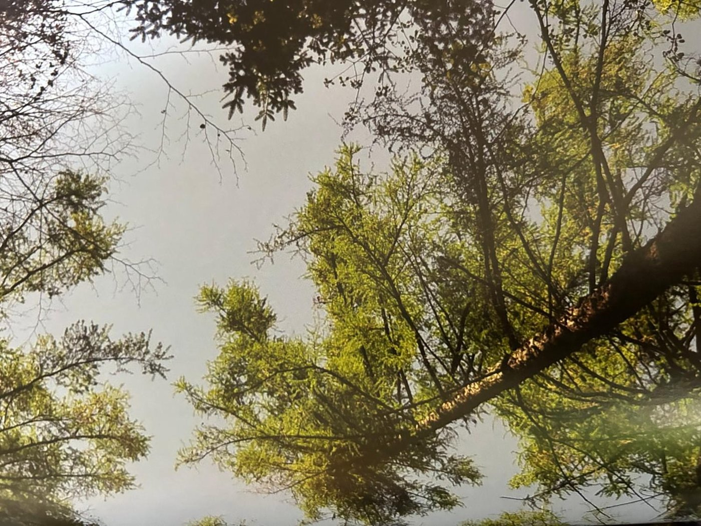
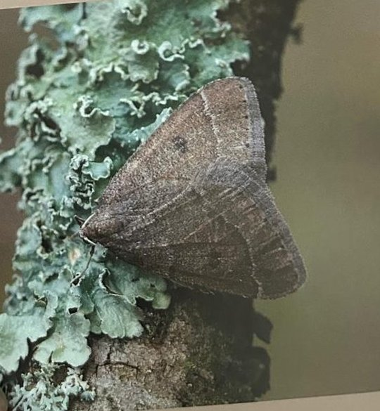

Groepen › Oude Wereld
21. Noord-Tjechië, Oostelijk Sudetengebergte

Het Tjechische Jesenikygebergte is het oostelijke deel van het Sudetengebergte, op zijn beurt de aanloop naar de Karpaten die zich uitstrekken tot in Roemenië. Hier staat typisch Centraal-Europees gebergtebos, waarin Fijnspar en Gewone zilverspar, en op iets grotere hoogte Europese lork domineren. De zogenaamde Sudetenlorken in arboretumgroep 21 worden door sommige taxonomen als een variant van de laatste onderkend, ze zijn opgekweekt uit zaad dat daadwerkelijk uit de streek afkomstig is. Lager op de berghellingen mengt zich beuk in het bos, en nog lager liggen de loofbossen met eik en beuk en soorten die ons in West-Europa meer of minder vertrouwd zijn. Beneden in de groep, tegen de Paardendelle aan, is recent zo’n gemengd loofbos aangelegd, met onder meer Zomer- en Winterlinde. Soorten uit Centraal- en Zuidoost-Europa als Meelbes en Wegedoorn, Hopbeuk en Hartbladige els kunnen hier een plaatsje vinden.
Uit het boek
1,77 ha · 24 soorten · 878 bomen · weerstation Spindlerův Mlýn
- Eerst bedoeld als Bohemerwoud met zilverspar; rond 1960 opnieuw opgebouwd rond de Sudetenlork, met 300 gram zaad uit Krnov.
- In 2016 uitgebreid met bosrand en struiklaag; aan de Voervijver leeft de zeldzame meidoornspanner.


Bron: Geografisch Arboretum Tervuren. Een wereldreis rond bomen (2020), p. 186 en volgende.
Deelgroepen
- 21 – Sudetengebergte
Soorten in deze groep (23)
- Fagus sylvaticaGewone beuk · 242 bomen
- Larix deciduaEuropese lork · 164 bomen
- Abies albaGewone zilverspar · 79 bomen
- Tilia cordataKleinbladige linde · 64 bomen
- Tilia platyphyllosGrootbladige linde · 61 bomen
- Carpinus betulusGewone haagbeuk · 50 bomen
- Fraxinus excelsiorGewone es · 35 bomen
- Picea abiesFijnspar · 34 bomen
- Rhamnus catharticaWegedoorn · 19 bomen
- Ulmus glabraRuwe iep · 15 bomen
- Cornus sanguineaRode kornoelje · 10 bomen
- Crataegus laevigataTweestijlige meidoorn · 10 bomen
- Crataegus monogynaEénstijlige meidoorn · 10 bomen
- Pinus sylvestrisGrove den · 10 bomen
- Prunus avium subsp. aviumZoete kers · 10 bomen
- Rosa rubiginosa subsp. rubiginosaEgelantier · 10 bomen
- Sambucus nigraGewone vlier · 10 bomen
- Sambucus racemosaTrosvlier · 10 bomen
- Viburnum opulusGelderse roos · 9 bomen
- Quercus roburZomereik · 8 bomen
- Betula pubescensZachte berk · 3 bomen
- Acer pseudoplatanusGewone esdoorn · 1 boom
- Betula pendulaRuwe berk · 1 boom
Tekst en foto: arboretum-tervuren.be (Koninklijke Schenking), met toestemming gebruikt.